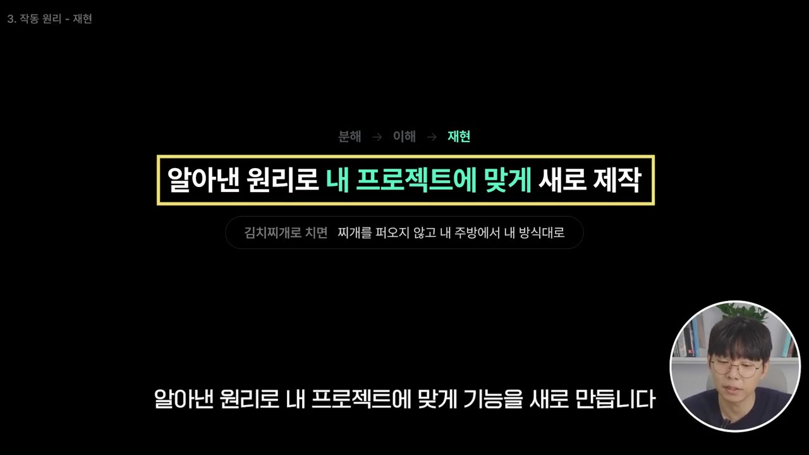
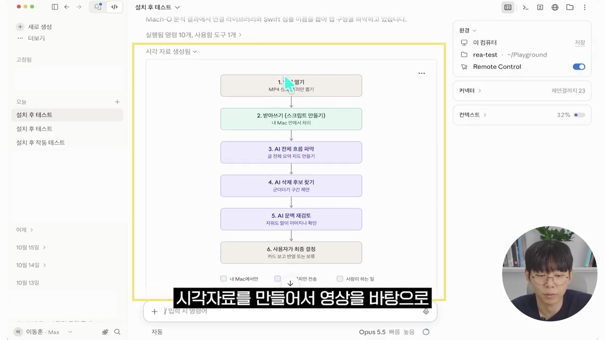
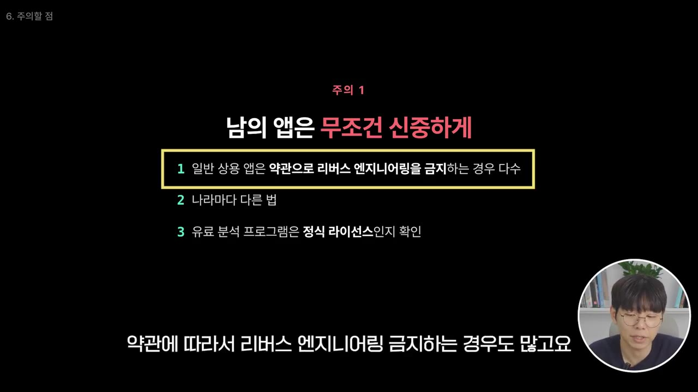
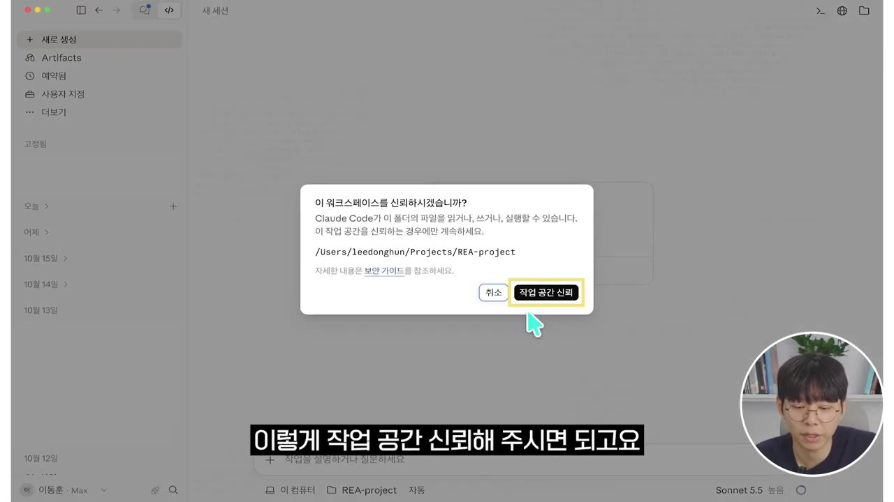
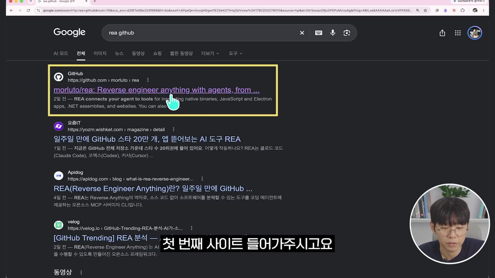
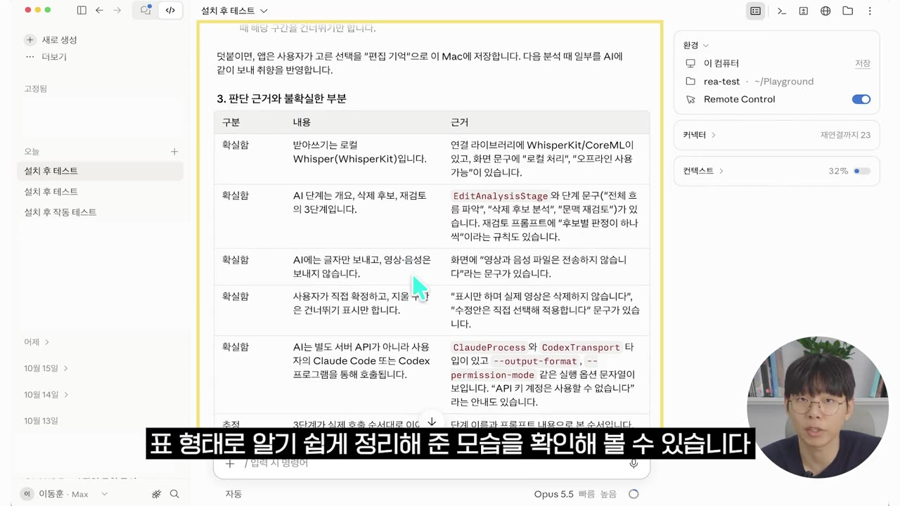

리버스 엔지니어링 모든것 12분 만에 마스터하기ㅣ핵심 개념, REA 설치 및 실습까지
▶ 원본 영상 보기한눈에 보기
- 리버스 엔지니어링은 소스 코드 없이 완성된 앱만 보고 기능과 작동 원리를 거꾸로 알아내는 기술이다.
- REA(Reverse Engineering Anything)는 오픈 소스 도구다. 직접 분석하지 않고, AI가 기드라·아이다·호퍼 같은 기존 분석기를 대신 다루도록 중간에서 연결한다.
- 클로드 코드에 REA 깃허브 주소와 "설치 후 테스트 진행" 한 줄만 주면 AI가 설치하고, 이어서 한 문장 요청으로 앱 분석까지 맡길 수 있다.
- 분석은 자기 앱이나 허락받은 앱, 오픈 소스에만 해야 한다. 상용 앱은 약관·나라별 법으로 금지된 경우가 많고, 결과물도 원본과 100% 같지 않다.
- 영상의 결론: 기능과 화면이 진입 장벽이던 시대가 끝났을 뿐 소프트웨어가 끝난 것은 아니다. 데이터·신뢰·업무 흐름 연결·서버 쪽 핵심 기능이 새 경쟁력이 된다.
이런 분께 도움이 됩니다
- 클로드 코드 같은 AI 코딩 도구로 자기가 만든 앱이나 오픈 소스 앱의 동작 원리를 파악해 보고 싶은 분
- 리버스 엔지니어링을 처음 접하고 개념·용도·법적 주의점을 한 번에 정리하고 싶은 분
핵심 내용
리버스 엔지니어링이란
- 한 문장으로 말하면 완성품을 보고 설계도를 거꾸로 알아내는 기술이다. (0:49)
- 보통의 개발은 레시피(소스 코드)를 보고 요리(앱)를 만드는 일이다.
- 리버스 엔지니어링은 반대로, 김치찌개를 한 숟갈 먹어 보고 "멸치 육수에 묵은지를 썼구나" 하고 레시피를 추측하는 일이다.
- 쓰이는 곳은 네 가지다. (1:08)
- 보안: 악성 코드가 무엇을 하는지, 프로그램에 어떤 취약점이 있는지 찾는다.
- 레거시(오래된 시스템) 수리: 만든 사람은 떠났고 설계도도 없는 시스템을 고칠 때 쓴다.
- 호환성: 문서가 없는 파일 형식이나 통신 방식을 내 프로그램과 연결할 때 쓴다.
- 학습·분석: 잘 만든 앱의 기능이 어떤 원리로 돌아가는지 알고 싶을 때 쓴다.
기존 분석 방식의 한계
- 우리가 쓰는 앱은 컴퓨터만 읽을 수 있는 기계어(0101…)로 바뀌어 있어서 사람이 바로 읽을 수 없다. (1:43)
- 그래서 전문가들은 기계어를 조금이라도 읽을 수 있게 바꿔 주는 전용 프로그램을 써 왔다. 대표적인 것이 기드라(Ghidra)·아이다(IDA)·호퍼(Hopper) 다.
- 셋이 하는 일은 같다. 앱 안에 남은 글자, 기능 이름, 그리고 어떤 기능이 어떤 기능을 부르는지를 보여 준다.
- 문제는 사람이 수백, 수천 개의 기능 사이를 손으로 따라가야 했다는 점이다. (2:13)
💡 성분 분석기는 있었지만, 그 결과를 읽는 법을 배우는 데 한참 걸렸다.
REA는 '분석기'가 아니라 '현장 감독'
- REA는 Reverse Engineering Anything, 즉 "뭐든지 리버스 엔지니어링한다"는 뜻이다. 누구나 무료로 쓰고 고칠 수 있는 오픈 소스다. (2:36)
- 깃허브 스타가 28만 개를 넘었다고 소개한다. 숫자는 자막 기준이며 인식 오류일 수 있다.
- 클로드 데스크톱, 클로드 코드, 커서 같은 AI 도구에 붙여 쓴다. MCP(AI 도구가 외부 프로그램을 쓰게 해 주는 연결 규격)를 지원하므로 코덱스 같은 도구와도 연결된다. (3:13)
- 실제 분석은 기드라·아이다·호퍼가 하고, REA는 AI가 이 분석기들을 대신 다루도록 연결하는 역할만 한다. (2:45)
💡 REA는 원본 소스 코드를 되살리거나 앱을 복제하는 도구가 아니다. 원리를 이해할 단서와 근거를 주는 도구다.
REA의 작동 원리: 3단계 조사
- 분해
- 해석
- 재현

- 공식 사례 두 가지
- 노션: 복사·붙여넣기 기능이 화면에서 시작해 앱 안쪽 깊은 곳까지 어떤 경로로 전달되는지 추적했다.
- 고전 게임 DX Ball: 공의 위치에 따라 왼쪽·오른쪽으로 튕기는 계산을 복원했다. 원본 게임과 3,205번 비교 테스트를 했더니 결과가 전부 같았다. (4:14)
- 믿을 만한 이유 세 가지
- 결론마다 어떤 근거로 판단했는지 기록을 남긴다.
- 확실하지 않은 것은 추측으로 채우지 않고 "모른다"고 표시한다.
- 분석 자체는 내 컴퓨터에서 이루어진다. 단, 결과를 받는 AI 모델 회사의 데이터 정책은 따로 확인해야 한다.
실습 결과: 직접 만든 맥 앱 분석
- 분석 대상은 진행자가 유튜브 편집용으로 만든 맥북 앱 '플레이스크립트'다. AI로 편집점을 자동으로 잡아 준다. 저작권 문제를 피하려고 자기 앱을 골랐다. (5:34)
- 분석이 진행되자 REA가 호퍼를 자동으로 실행해 앱을 살폈다. 시간이 꽤 오래 걸렸다. (7:31)
- 결과로 AI 편집 기능의 동작 순서를 그림으로 만들어 주었고, 테스트 결과, 편집 순서, 판단 근거와 불확실한 부분을 표로 정리했다. (7:55)

- 다만 진행자는 마무리에서 "AI가 기능과 동작 방식은 꽤 알아냈지만 모르는 부분도 분명히 있었다"고 말했다.
주의할 점
| 주의점 | 내용 |
|---|---|
| 남의 앱은 신중하게 | 상용 앱은 약관으로 리버스 엔지니어링을 금지하는 경우가 많고 나라마다 법도 다르다. 상용 앱을 무단으로 가져다 쓰는 것은 절대 안 된다. 유료 분석 프로그램을 쓸 때는 그 라이선스도 확인한다. |
| 공식 프로그램만 | REA는 위험한 프로그램을 안전하게 가두는 장치(샌드박스)가 아니다. 출처를 모르는 프로그램은 열면 안 된다. REA 자체도 카피본이 많으므로 공식으로 확인된 것만 쓴다. |
| 100% 재현은 어렵다 | 분석 결과로 앱을 따라 만들어도 원본과 똑같이 구현하는 것은 사실상 어렵고, 시간과 노력이 많이 든다. |

💡 내 것이나 허락받은 앱에만 쓰고, 코드가 아니라 원리를 배워 새로 만든다. (9:56)
소프트웨어는 끝났을까?
- 진행자는 "AI가 뭐든 뜯어보고 따라 만드니 소프트웨어는 끝났다"는 주장에 반대한다. (10:10)
- AI는 앱이 "어떻게" 돌아가는지는 알아내도, "왜" 그렇게 만들었는지는 알지 못한다. 어떤 사람의 어떤 불편을 풀려고 만든 기능인지는 코드 어디에도 적혀 있지 않다.
- 끝난 것은 기능과 화면 자체가 진입 장벽이던 시대다. 경쟁력은 다음으로 옮겨 간다고 본다. (10:57)
- 그동안 쌓은 데이터
- 사용자 신뢰
- 사람들의 매일 업무 흐름에 얼마나 깊게 연결돼 있는가
- 핵심 기능을 내 컴퓨터의 앱 안이 아니라 회사 서버에 두는 방향. 앱 안에 있는 것은 뜯어볼 수 있지만 서버는 밖에서 볼 수 없기 때문이다.
💡 소프트웨어가 끝난 게 아니라 경쟁 무대가 옮겨 갔다. 기능 구현의 문턱은 낮아졌고, 이제는 "왜 필요한지"를 파악하는 능력이 중요하다.
따라 해보기
준비물
- 클로드 코드 (영상은 폴더를 선택하는 화면이 있는 데스크톱 앱 형태로 진행)
- 분석할 앱: 내가 만든 앱이나 오픈 소스 앱. 영상은 맥북 앱으로 진행했다.
- 분석기: 영상에서는 호퍼가 자동으로 실행됐다. 앱 종류에 따라 다른 분석기가 쓰일 수 있다.
- 소요 시간: 설치와 분석 모두 "꽤 오래" 걸린다고 했다. 구체적인 시간은 영상에 나오지 않는다.
단계별 방법
- 작업 폴더 만들기
- REA 깃허브 찾기
- AI에게 설치 맡기기
- 설치 완료 확인
- 분석 요청
- 결과 확인
- 1작업 폴더 만들기
클로드 코드에서 폴더 아이콘을 누르고 '폴더 열기'(버전에 따라 '폴더 추가'·'폴더 선택')를 선택한다. 새 폴더를 만들어 열고, 작업 공간 신뢰를 승인한다. (5:11)

새 폴더를 연 뒤 '작업 공간 신뢰' 버튼으로 승인하는 화면 · ▶ 5:33 - 2REA 깃허브 찾기
구글에서 "rea github"를 검색해 첫 번째 결과로 들어간다. 저장소 아래 'Quick Start'에 여러 설치 방식이 있지만, 직접 따라 하지 않고 AI에게 맡긴다. (6:00)

구글에서 'rea github' 검색, 첫 결과 morluto/rea 저장소 클릭 · ▶ 6:06 - 3AI에게 설치 맡기기
저장소 주소를 복사해 클로드 코드에 붙여 넣고, Shift+Enter로 줄을 바꾼 뒤 "설치 후 테스트 진행"이라고 입력한다. (6:22)
- 4설치 완료 확인
오래 걸리니 맡겨 두고 다른 일을 해도 된다. MCP와 스킬이 설치됐다는 안내가 나오면 완료다.
- 5분석 요청
아래 프롬프트를 입력한다.
- 6결과 확인
분석기(영상에서는 호퍼)가 자동으로 실행되며 분석이 진행된다. 끝나면 동작 순서 그림과 근거·불확실한 부분을 정리한 표를 확인한다.
5단계에 입력할 내용 (영상 내용을 바탕으로 정리한 것이며, 원문 그대로는 아님)
REA로 바탕화면 폴더에 있는 [앱 이름] 앱을 분석해서 [알고 싶은 기능]이 어떤 순서로 동작하는지 알려줘.
소스 코드는 보지 말고 완성된 앱만 철저하게 분석해서, 비개발자도 이해할 수 있게 쉬운 말과 그림으로 설명해줘.
근거가 확실하지 않은 부분은 따로 표시해줘.

따라 할 수 있는지 점검
- ✅ 바로 따라 할 수 있음: 1단계 폴더 만들기, 3단계 설치 요청, 4단계 완료 확인, 6단계 결과 확인
- ⚠️ 2단계 「REA 깃허브 찾기」: 정확한 저장소 이름과 주소가 영상에 나오지 않는다. 진행자도 카피본이 많다고 경고했다. → 설명란의 오픈채팅방 자료나 영상 6:09 화면에서 저장소 이름을 확인하고, 스타 수·공식 문서 링크로 공식 저장소인지 확인한 뒤 복사한다.
- ⚠️ 6단계 「결과 확인」: 분석기 설치 여부가 영상에 나오지 않는다. 호퍼는 맥용 유료 프로그램이고(보충), 기드라는 무료 오픈 소스다(보충). → 설치 단계에서 클로드 코드가 어떤 분석기를 쓰는지 안내를 확인하고, 유료 분석기라면 라이선스를 확인한다(영상에서도 권고).
- ⚠️ 준비물 「운영체제」: 영상은 맥에서만 진행했다. 윈도우에서 같은 절차로 되는지는 나오지 않는다. → 깃허브 Quick Start의 지원 환경 항목을 확인한다.
- ❓ 클로드 코드가 터미널(CLI) 버전인지 데스크톱 앱인지 명시되지 않았다. 폴더 선택 화면으로 보면 데스크톱 앱으로 보인다.
확인 방법
- 설치 후 클로드 코드가 "MCP·스킬 설치 완료"를 안내하고 테스트까지 통과했다고 알려 주면 된다.
- 분석 결과에 기능 동작 순서와 판단 근거가 있고, 불확실한 부분이 따로 표시돼 있으면 정상이다.
막히면
- 시간이 오래 걸리는 것은 정상이다. 진행자도 "시켜 놓고 다른 일을 하라"고 했다.
- 출처를 모르는 앱은 분석하지 않는다. REA는 샌드박스가 아니어서 악성 프로그램을 열면 그대로 위험하다.
기억할 숫자·인용
- 깃허브 스타 28만 개 이상 (자막 기준, 인식 오류 가능)
- DX Ball 복원 계산을 원본과 3,205번 비교 테스트한 결과, 전부 일치
- 대표 분석기: 기드라(Ghidra)·아이다(IDA)·호퍼(Hopper)
- "어떻게는 알아도, 왜 이렇게 만들었는지는 알 수 없었다."
- "끝난 것은 소프트웨어가 아니라, 기능과 화면이 진입 장벽이던 시대다."
생각해볼 점
- (영상 내용) REA가 "분석은 내 컴퓨터에서 이루어진다"고 해도 분석 결과는 클로드 같은 외부 AI로 전달된다. (내 의견) 회사 앱이나 민감한 바이너리를 분석하기 전에는 사내 정책과 AI 회사의 데이터 정책을 먼저 확인하는 것이 안전하다.
- (영상 내용) 실습 앱은 진행자가 직접 만든 앱이라 결과가 맞는지 스스로 검증할 수 있었다. (내 의견) 처음 보는 앱이라면 AI 설명이 맞는지 판단하기 어렵다. 그래서 '불확실 표시'와 '근거 기록'을 꼭 함께 확인해야 한다.
- (영상 내용) "핵심 기능은 서버로 옮겨 갈 것"이라는 전망은 진행자 개인의 예측이다. 법적 허용 범위도 약관과 나라별 법에 따라 다르므로 구체적인 경우는 따로 확인해야 한다.
바로 해볼 일
- 영상 6:09 화면이나 설명란 자료로 REA 공식 깃허브 저장소 이름을 확인하고 즐겨찾기해 두기
- 내가 만든 작은 앱이나 오픈 소스 앱 하나를 골라 분석 대상으로 정하기
- 클로드 코드에 새 폴더를 열고 "설치 후 테스트 진행"으로 REA 설치해 보기